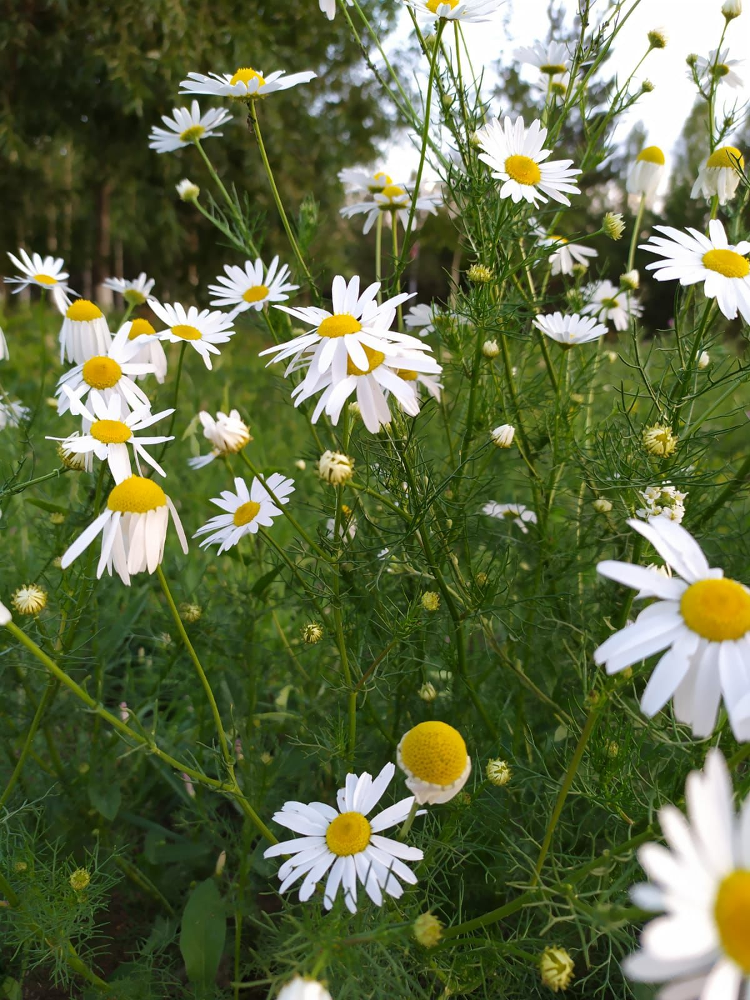

Дикорастущая ромашка аптечная встречается в Сибири, на Алтае, Кузнецком Алатау, в степной части Забайкалья. После введения в культуру она широко расселилась по краям полей, обочинам дорог, около жилья, на пустырях и залежных лугах — как сорное растение. Её культивируют для получения лекарственного сырья на специальных плантациях.
Настой цветков ромашки аптечной принимают внутрь при заболеваниях желудочно-кишечного тракта, болезнях печени и желчевыводящих путей, метеоризме, спазмах желудка; в виде клизм — при колитах и геморрое; в виде полосканий — при воспалении десен, слизистых оболочек, ангинах; в виде примочек — при экземах, язвах, нарывах, ожогах рентгеновскими лучами; в виде припарок — при ревматизме, подагре, артритах, ушибах.
Эфирное масло ромашки обладает дезинфицирующим и потогонным действием, уменьшает образование газов, снимает боли, ослабляет воспалительные процессы, нормализует нарушенную функцию желудочно-кишечного тракта, возбуждающе действует на центральную нервную систему: усиливает и учащает дыхание, увеличивает число сердечных сокращений, расширяет сосуды головного мозга. Препараты ромашки ускоряют процессы регенерации эпителия при экспериментальных язвах и задерживают развитие воспаления. Порошок цветков ромашки в народной медицине употребляют при мигрени; сок ромашки применяют внутрь при лечении гастритов, язвенной болезни желудка, при спазмах и болях в желудке и кишечнике, метеоризме, поносах, болезнях печени, желчного и мочевого пузыря, почечных коликах.
Ромашка аптечная рекомендуется при повышенной кислотности желудочного сока. Принимаемая с медом и сливками на ночь, вызывает крепкий сон. Наружно, в виде полосканий, используется при ангине, для промывания глаз, ран, при потливости конечностей.
Ромашка аптечная входит в состав успокоительных, ветрогонных и мягчительных сборов.
